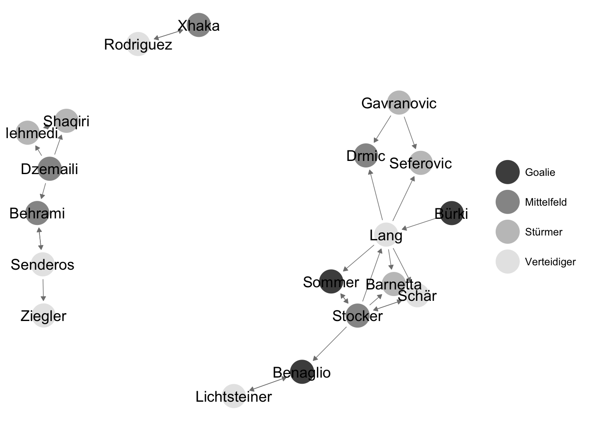

3 Network data: how to store and use network data
3.1 Different formats to store network data
Relational data consist of nodes and edges between these nodes. Data on the nodes—nodal attributes—can be stored in the conventional way: in a data frame where each row corresponds to each node in the network. The edges that make up a network need to be stored in a slightly more complex manner.
Take the following network:

To store the network data leading to the network plot, the sender and target nodes of each edge in the network have to be recorded. There are multiple ways of storing network data. The simplest form is called a edgelist, where each row in a data set corresponds to a tie in the network:
## [,1] [,2]
## [1,] "d" "f"
## [2,] "f" "a"
## [3,] "f" "c"
## [4,] "f" "b"
## [5,] "f" "e"
## [6,] "e" "f"
## [7,] "e" "c"
## [8,] "c" "e"
## [9,] "b" "h"
## [10,] "h" "e"
## [11,] "h" "c"
## [12,] "h" "g"
## [13,] "g" "e"
## [14,] "g" "a"Here the rows correspond to the edges in the network, the columns correspond to sender nodes myel[,1] and target nodes myel[,2].
An alternative way of storing network data is by creating a matrix with all unique nodes in the rows as well as in the columns:
## d f e c b h g a
## d 0 1 0 0 0 0 0 0
## f 0 0 1 1 1 0 0 1
## e 0 1 0 1 0 0 0 0
## c 0 0 1 0 0 0 0 0
## b 0 0 0 0 0 1 0 0
## h 0 0 1 1 0 0 1 0
## g 0 0 1 0 0 0 0 1
## a 0 0 0 0 0 0 0 0Here, the network information is stored less efficiently but more intuitively: Every possible tie in a network is listed in the data set, for instance sender a tying to target b. If this tie exists, if (a, b) are indeed linked in the network, the matrix alotts them a 1. If (a, b) are not linked, they receive a 0 in the adjacency matrix.
A third way of storing network data is through adjacency lists. They combine both features of the edge list and of the adjacency matrix:
## sender target
## 1 a <NA>
## 2 b h
## 3 c e
## 4 d f
## 5 e c, f
## 6 f a, b, c, e
## 7 g a, e
## 8 h c, e, gAs mentioned above, nodal attributes can be stored in a data frame with row corresponding to unique nodes and columns to variables:
## nodes groups
## 1 d group 1
## 2 f group 1
## 3 e group 1
## 4 c group 2
## 5 b group 2
## 6 h group 2
## 7 g group 2
## 8 a group 23.2 Dealing with network data in R
3.2.1 Storing network data using edge lists
Read in the network data of the Swiss national socer team.